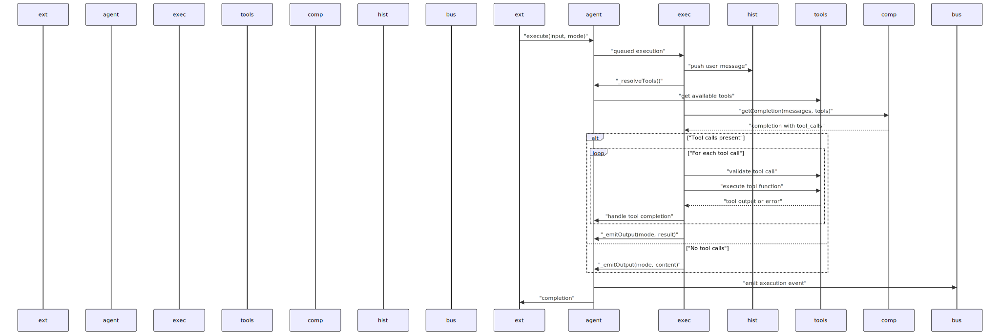

This document covers the ClientAgent class implementation, which serves as the core execution unit for individual agents within the swarm system. The ClientAgent handles message processing, tool execution, history management, and event coordination through an asynchronous, queue-based architecture.
For information about agent configuration and schema definition, see Agent Schema Services. For details on swarm-level coordination and agent orchestration, see Swarm Management. For session-level message handling, see Session and Chat Management.
The ClientAgent implements the IAgent interface and serves as the primary execution engine for individual agents. It coordinates between multiple services and uses reactive programming patterns via Subject instances for asynchronous state management.

The ClientAgent follows a structured execution lifecycle with queued processing to prevent overlapping executions. The system supports both stateful execution (via execute) and stateless completion (via run).

Both execute and run methods use the queued decorator from functools-kit to prevent overlapping executions:
public execute = queued(EXECUTE_FN);
public run = queued(RUN_FN);
This ensures that only one execution can occur at a time per agent instance, maintaining consistency in message processing and tool execution.
The ClientAgent handles tool execution through a sophisticated orchestration system that supports validation, error recovery, and asynchronous coordination.

The ClientAgent uses a ToolAbortController to manage cancellation of ongoing tool executions:
class ToolAbortController {
private _abortController: AbortController | null = null;
get signal(): AbortSignal {
return this._abortController.signal;
}
abort() {
this._abortController?.abort();
this._abortController = new AbortController();
}
}
This controller provides AbortSignal instances to tool executions, allowing for graceful cancellation when agent changes or errors occur.
The ClientAgent integrates closely with the history system to maintain conversation context and support completion generation.

The ClientAgent works with ClientHistory to maintain appropriate context for completions. The history system applies filtering based on:
CC_AGENT_HISTORY_FILTER)keepMessages parameter)The ClientAgent implements a robust error recovery system through the _resurrectModel method, which handles various failure scenarios.

The system handles several types of errors:
Each error type triggers appropriate recovery mechanisms and logging.
The ClientAgent uses Subject instances from functools-kit for asynchronous coordination between different execution phases.

The tool execution system uses Promise.race() to coordinate between tool completion and various interruption signals:
const statusAwaiter = Promise.race([
self._agentChangeSubject.toPromise(),
self._toolCommitSubject.toPromise(),
self._toolErrorSubject.toPromise(),
self._toolStopSubject.toPromise(),
self._resqueSubject.toPromise(),
self._cancelOutputSubject.toPromise(),
]);
This allows for responsive cancellation and error handling during tool execution.
The ClientAgent integrates with multiple services through dependency injection and the service layer architecture.

The AgentConnectionService manages ClientAgent lifecycle through memoization, ensuring efficient reuse while maintaining proper initialization and disposal:
clientId-agentName key